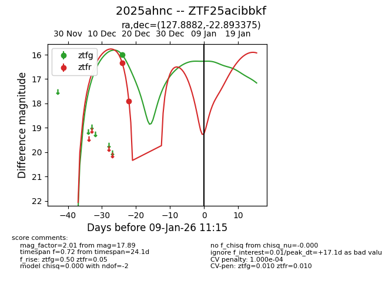
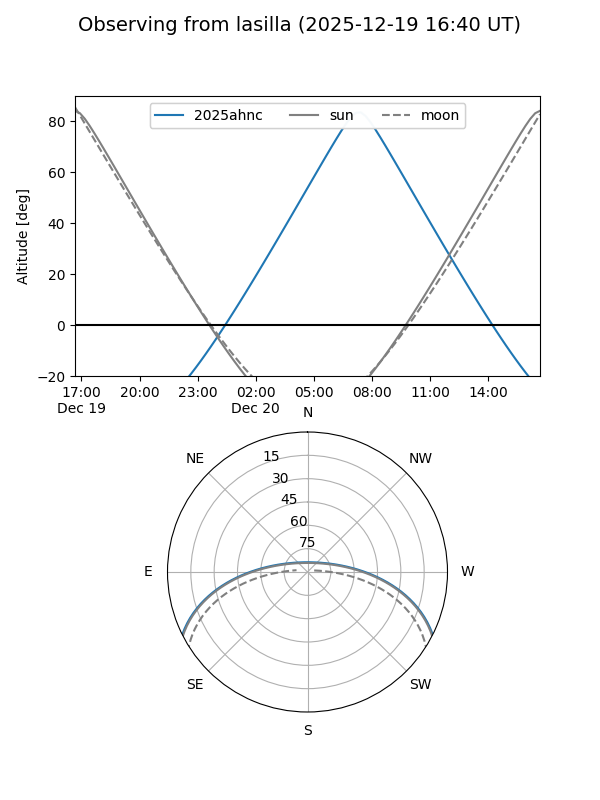
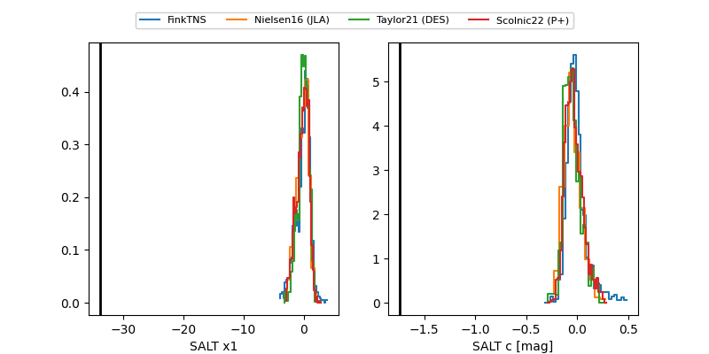

2025ahnc
Target 2025ahnc at 2025-12-31 16:59
Aliases and brokers:
FINK:
Lasair:
ALeRCE:
TNS:
YSE:
alt names
ZTF25acibbkf (ztf,fink_ztf)
2025ahnc (tns,yse)
Coordinates:
equatorial (ra, dec) = 127.8882,-22.89338
equatorial (HMS+DMS) = 08:31:33.16,-22:53:36.15
galactic (l, b) = (245.0476,+9.75784)
Flags:
likely cv
Photometry:
last atlasc=18.36, atlaso=16.84, ztfg=16.00, ztfr=17.89
3 atlasc, 2 atlaso, 1 ztfg, 2 ztfr detections
Lightcurve

Visibility


Additional plots
